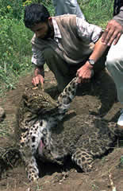
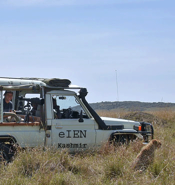

|
|
Wildlife Human
Conflict Mgt Programme
KASHMIR
|
|
On
November 18 2006, the burning of a bear to death by a mob in south
Kashmir’s Pulwama district ,a private TV news channel Sahara Samay
showed the footage of the incident. The bear had a child in its lap
for 20 minutes, it however did not harm him. The animal left the child
but the villagers locked it in a cowshed for night. In the morning,
the animal tried to escape but the villagers chased it and burnt it.
We at eIEN Kashmir were one of the spectators, who viewed this on
Sahara Samay. Truely, a ghastly gruesome footage.. Our initial
reaction was one of anger on the person who was shooting this
barbarism, without trying to help. CANT eIEN
Kashmir DO SOMETHING ABOUT THIS ?
eIEN Kashmir
scientists concerned of Wildlife human conflict issues and engaged in
processes responded to the emerging challenge and threat of conflicts
by supporting a programme on Wildlife Human Conflict Management , on
25 November 2006.
We better know the
need to preserve and protect our wildlife. Sometimes we come across
conflicting situation when wildlife starts causing immense damage and
danger to man and under such conditions it becomes very difficult for
the wildlife department to pacify the affected villagers and gain
support for wildlife conservation. Infact more killings are done by
locals than by poachers.
BCN Kashmir take immediate steps to upgrade its role in Wild life
conflict resolution. Thus
Wildlife Human Conflict Management Programme, initiative of
Biodiversity Conservation Network Kashmir, eIEN Kashmir, to
minimize the conflicts between wild and the people came into force, important element
at WHCMP strategy is awareness. WHCMP
in Kashmir is to
motivate the public to prevent cruelty to animals and to promote
animal welfare and conservation policies that advance the well being
of both animal and people. Small, but effective, seeking to prevent
further destruction of Kashmir's Wildlife and its habitat and level
the playing field by infusing resources and broad-based support into
campaigns to protect wildlife, captive-held animals, and biodiversity
wildlife rescue and rehabilitation. BCN Kashmir - sharing a
vision of a world where wildlife and wild places are truly protected.

BCN
Kashmir's Wildlife Human Conflict management programmes are focused in
the northern part of Kashmir, where the conflicts is increasing. The
other three districts in this region have been prioritized on the
basis of potential conflict areas as: Priority 1 - Srinagar;
2 – Pulwama; and Priority 3 – Anantnag. BCN’s strategy is to implement
innovative programs that will help to minimize conflict between snow
leopards and people. These community-based projects—many are pilot
programs—will have relevance for broader regional application. BCN
Pakistan will work in close collaboration with several other
organizations, both international and local, in designing and
implementing these programs. Prominent among them is collaboration
with State Wildlife Protection Department to develop an integrated
approach to improve wildlife conservation by minimizing conflict with
herders. The project has already established models that have helped
to minimize livestock depredation and retaliatory killing by promoting
better livestock husbandry methods. We provide training to communities
and has established a model livestock depredation insurance scheme to
mitigate wildlife conflict related issues.
The conservation of wildlife and
their threatened habitats faces many challenges and involves a wide
variety of issues, and thus require a fresh look at the ways that
these challenges can be met. One of the great dilemmas of our
era is the increasing conflict between wildlife and people. As the
human population keeps expanding there is an increasing demand for
land for agriculture and natural resources for industry, leading to
increased opportunities for wildlife and people to come into contact
and ensuing conflict. It has become apparent that we can no longer
deal separately with the problems facing wildlife and the problems
facing people. Rather, we must seek to understand the sociological,
economic and cultural aspects of people’s involvement with wildlife,
paying special attention to the needs of the stakeholders (e.g.
wildlife populations under threat, human communities enduring threats
/ damage from wildlife, agencies responsible to alleviate problem),
and apply them to find practical actions to resolve conflicts. There
are many different situations where wildlife and people come into
conflict. The reasons for these conflicts can be varied and most are
not easily solved by a quick fix but require longlasting solutions.
Wildlife-people conflicts occur worldwide, and are not, as some might
first think, confined to the Kashmir. At first glance it may appear
that the nature of these conflicts is as diverse as the numerous
variables that contribute to them. But by looking more closely it can
be seen that there are several underlying trends that are most often
responsible for these conflicts. As the human population continues to
mushroom there is an ever-spiralling demand for space and resources.
Suburbia sprawls, industry escalates, and agriculture keeps expanding,
and as a result wildlife is rapidly been squeezed into smaller and
more fragmented spaces. Often this expansion is not uniform over all
areas but rather occurs in particular areas where the resources that
humans cherish most, such as water and fertile soil, are found.
Unfortunately these are often the very same resources that wildlife
also value highly, and it is the competition between humans and
wildlife for these assets that often leads to conflict. To further
compound this situation, the landscape is being fragmented by human
expansion. As the land available to wildlife diminishes and the
corridors between pockets of wildlife habitat disappear, a patchwork
of habitat fragments is left behind, and the likelihood of humans and
wildlife coming into conflict is much higher. This is largely due to
what is known as the “edge effect”, where a decrease in the area of a
fragment of wild habitat causes a disproportionate increase in its
boundary, resulting in a larger fringe around the fragment. Obviously
if this fragment of land is inhabited by wildlife then there will be a
greater interface between that wildlife and surrounding human
activities and a strong possibility that conflict will develop.
Because
of its great diversity of habitat types, Kashmir is home to more
wildlife species than most other states. It is literally impossible to
live in this state without seeing or hearing wildlife on a daily
basis. Many of these experiences are
enjoyable; others are confrontational. Unpleasant encounters with our
wild neighbors can result in human death, injury, or fear of injury,
property damage, or minor nuisances. Some of our frustrations with
wildlife can be alleviated by simply learning why a situation occurs.
Others require more action-oriented prevention and control techniques
e.g.
-
Natural resources and village assets map
-
Map of depredation “hotspots” and seasonal pastures
-
Calendar of seasonal livestock movements and daily herding cycle
-
Seasonal calendar of depredation losses (shows peak depredation
periods)
-
Pasture ranking with respect to depredation and other losses
-
Pair-wise matrix ranking of major sources of livestock mortality
-
Ranking of different guarding measures
-
Income and livelihood ranking matrix
-
Semi-structured interviews to assess predation causes and patterns,
along with possible remedial actions
-
Venn diagram showing village institutions affecting livestock
production & management
-
Village or pasture walk to obtain first-hand understanding of
livestock management practices and issues

As
with any wildlife population, objectives and attitudes of landowners,
land managers, resource users, and the general public will determine
if wild animals are considered an asset or a liability. Human
attitudes will ultimately determine whether or not wild animals can
survive. Public perception of the Kashmiri's carnivores will be
partially dependent on immediate and effective responses by wildlife
professionals to reported conflicts. Wild animals may be killed by
individuals who are unaware of solutions to simple problems, who feel
that no effective solution for their particular conflict exists, or
who think that no one cares. Because the numoroius wildlife species of
Kashmir are
listed as threatened under the Endangered Species Act, killing wild
animal within the historic range of the subspecies carries central and
state penalties that can include heavy fines, suspension of hunting
privileges, and jail time. Informing the public about potential
conflicts and available solutions is an important strategy in the
overall restoration effort.
In general, conflicts between humans and wildlife can be addressed by
either managing the animals involved in the conflict, manipulating the
resource being damaged, or by placing a physical or psychological
barrier between the conflicting resource and wildlife species. Due to
the legal status of wild animals , conflict resolution will rely
heavily on non-lethal damage control techniques, such as barriers,
capture and aversive conditioning, and resource management strategies.
Destruction of offending animals will only be considered if human
health and safety is jeopardized and all other measures have failed.
Ideal management plans should emphasize conflict prevention and, when
problems arise, the implementation of practical solutions.
Hunting is often recommended as a damage control tool because it
reduces wildlife populations and associated problems to acceptable
levels and elicits human-avoiding behavior in the hunted species.
Legal harvest may become part of the overall management plan for many
carnivore's in the future. Until the subspecies is recovered,
however, hunting is not considered a management option. Biologists
will need to determine that restoration efforts have been successful,
the harvestable surplus, and the maximum density of wild carnivore
that will be tolerated by the public before bear hunting will be
permitted.
Trapping and releasing them far from their capture site is called
relocation. Relocating can cause them to roam over large areas in
search of familiar surroundings. Kashmir wild animals have an
excellent homing instinct, and will attempt to find their way back to
familiar territory, e.g Bears have been documented traveling up to 400
miles from relocation sites. This increases their susceptibility to
being killed by vehicles along roads or by humans who perceive a
threat to their own safety. Because of the stress and increased human
interaction, relocated bears have a reduced chance of survival. In
addition, moving a problem animal from one area to another can
potentially bring a nuisance to the new area. Consequently, bears
involved in conflicts with humans should be left in their established
territory whenever possible. Nuisance behavior can be altered through
live trapping, conditioning, and releasing bears into the same general
area. This can be accomplished by using the bear’s intelligence and
quick learning ability to “teach” bears to stop nuisance behavior.
This is referred to as aversive conditioning.
Barriers preventing access may totally eliminate some ongoing problems
and offer the greatest immediate relief from conflicts that arise.
Barriers, in most cases, are both economically and technically
feasible to install and are considered a viable option for controlling
many types of bear-related damage. Solar-powered electric fencing for
bee yards, for example, is an extremely effective bear deterrent.
Management of the resources being damaged or threatened is also
applicable to our goal of effectively managing wild human conflicts.
In some cases, conflicts may be avoided by keeping susceptible
resources away from wild habitat or by removing attractants that lure
animal to those resources.
Increasing Wildlife Human Conflicts in Kashmir - Why ?
-
Dwindling habitat
due to shrinking forests cover compels them to move outside forests
and attack human's and its livestock & standing crops.
-
Very often the
villagers put electric wiring around their ripe crops or livestock
home , animal gets injured, suffer in pain and turn violent.
-
Wildlife
corridors through which the wild animal used to migrate seasonally
in groups to other areas, are being locally occupied by the human
settlements and at large scale Indo Pak line of control is now
electric fenced thus forcing wild animal to react .
About 45 % of the mammalian diversity of the state is listed as
globally threatened in IUCN Red Data List and 34 % is included in
Schedule I of the Wildlife Protection Act, 1972. This gives an
indication of the status of animals found in the State and the
conservation value of the State. There are many species facing similar
threats but do not find mention in either list. One can cote both the
species of hamster as an example. Although these species occur in
abundance locally, there numbers are being gradually reduced due to
indiscriminate trapping for their fur value. There are several species
of animals which have either been wiped out completely or are on the
verge of local extinction due to shelling, landmines, forest fires,
hunting pressures, grazing competition with domestic live stock and
poaching. Besides these, unfortunately a new chapter has been opened
in Kashmir, having potential to wipe out the whole wildlife population
in and around valley - wildlife-human conflicts. Nowadays a good
number of predators have been wandering around in Valley where they
have killed human beings and livestock or killed themselves.
The animals were until recently able to
roam through forests in the divided Himalayan region of Kashmir. But
they are unable to penetrate a heavily defended barrier built by India
from 2003 to stem guerrilla activity linked to a separatist revolt
since 1991. Fence has cut the numbers of militants crossing into
Indian territory and of shootouts with soldiers, Kashmiris living in
isolated hamlets now face an altogether different threat. As fencing
is one of the reasons that has restricted the trans-border movement of
wild animals in the border areas of the state, If people stand divided
due to the fence, then so do animals.
Dwindling habitat
due to shrinking forests cover compels them to move outside forests
and attack human's and its livestock & standing crops. Usually ill, weak
and injured animals have a tendency to attack and very often the
villagers put electric wiring around their ripe crops or livestock
home, animal gets injured, suffer in pain and turn violent.
Wildlife
corridors through which the wild animal used to migrate seasonally
in groups to other areas, are being locally occupied by the human
settlements and at large scale Indo Pak line of control is now
electric fenced thus forcing wild animal to react .
More than 742-km long (460-mile), 25 km
wide Line of Control, electrical fenced, solid steel walls, all-night
lighting, multiple-layered vehicle barriers, an immense network of
newly bladed roads, a 24-hour flow of patrol vehicles (including
ATVs), constant low-level aircraft over flighters, and foot
patrols--all designed to curtail insurgency--are also combining to
create the ultimate barrier to wildlife movement in Kashmir, between
the south Asian nuclear rivals - India & Pakistan. One of the greatest
challenge is to find means to protect cross-border wildlife linkages
in this globally significant ecological region. The LoC region is
highly sensitive wildlife bio-sphere reserve. Home to a large number
of rare mammals like mountain ungulates and birds like pheasants, it
has habitats for highly endangered musk deers, black bears, gorals,
western tragopans, cheers and monals. The magnitude of the
fragmentation threat facing this international habitat (which bridges
the mountain ranges of Western Himalaya) is difficult to imagine and
even more difficult to address. The fact of the matter is that
connections between the wildlife and the LoC may well be the most
endangered wildlife linkages on the continent. The current effort by
the Defence to seal off the border completely as quickly as possible
to protect against an increasing flood of insurgency is the primary
force behind this unfortunate distinction. If existing and proposed
security infrastructure is maintained and built-out as planned, there
can be no wildlife-friendly crossing structures, no
conservation-easement-protected open space corridors, no effective
habitat mitigation plans, and no consideration for state endangered
listed species. Building such an unforgiving barricade through the
heart of the Western Himalaya region is painfully ironic.
Wild habitat destruction or defragmentation is main case of the
present fate of our wild life population. It is felt that despite the
presence of numerous laws aimed at conservation and protection of
forest resource this natural wealth is deteriorating in quality and
density owing to human(100.70 lac as on 2001) and live stock
population explosion (As per census of 2001 total livestock population
in Kashmir division is 40 lacs besides poultry of 44.66 lac ),
overgrazing impeding regeneration, diversion of forest land for non
forestry purpose, encroachment (In Pirpanjal Forest Division alone
(Kashmir) 890 hectare has been encroached so for) and urbanization (
Salim Ali National Park converted into International Royal Spring Golf
Course - Srinagar ), forest fires, traditional affinity for forest
biomass, lack of sufficient alternatives, poor socio economy, low
literacy, education and awareness, heavy smuggling due to political
unrest (so for 58 forest officers-officials including conservator of
forester fell to the bullets in the harness during the insurgency),
the forest cover has been reduced.
The recorded forest area in the State occupies only 20182 sq. km i.e
19.95 % of its 222235 sq. km geographical area. As per the National
Forest Policy, 1988 , hilly regions like that of Jammu & Kashmir
should aim at a forest cover of 66 % against the prescription of 33 %
suggested in NFP for the plain regions of the country. Further, about
46 % of the reported cover is between crown density of 10- 40 % ,
leaving only about 11000 sq km of good forest with crown density of
more than 40 %. Despite blanket ban on green felling by Supreme Court,
5360000 Cft firewood / timber is annually commercialized. Forest
Conservation Act ( 1997 ) strictly prohibits diversion of any forest
area to non forestry sector. However ever since 1997 Forest
Conservation Act, 3815.416 ha forest area has been diverted. Forests
encroachments is ever increasing issue of Kashmir forests particularly
in South circle ; range Anantnag 1065, Lidder 296, Shopian 768, JV
197 hectare has been encroached. Similarly in North circle ; Kamraj
737, Langate 542, Kehmil 1070 and in Srinagar circle; Badipora 270, Pirpanjal 890, and Sind 230 hectares of forest land has been
encroached.
Kashmir with total geographical area of 22.2 lac hectares, is
predominantly an agriculture economy with total cultivable area of
7.48 and gross sown area of 11.15 lac hectares, roughly 80% rural
population directly or indirectly depends on agriculture and allied
sectors. However, the Valley falls in the, mountainous Agriculture
zone and therefore has a limited cultivable area. The average size of
holding in the state is 0.76 hectares and about 85% farmers are in the
categories of small and marginal farmers. The State is facing deficit
production of around 25% in food grain, 70% in oil seed production and
about 40% in vegetable production, coupled with Annual growth of 2.9%.
People inside forests and in its vicinity tend to increase their
agriculture land or construct structures thereon. In recent past, the
tendency showed an increase, resulting in direct wildlife human
conflicts.
With animal husbandry being the mainstay of a large percentage of the
people of the state, pressure of grazing in the state is far beyond
the production capacity of pasturelands of all types and is adversely
affecting the natural regeneration of the forests. The total area
available for grazing in the state is estimated to be 12787 sq km
which works out to be 9.02% of the total geographic area. The alpine pasture
have also lost their productive capacity under the pressure of the
nomadic graziers. The carrying capacity of all typed of pasture lands
does not exceed more than 2 to 3 Himalayan stock units (1 HSU = 1
adult sheep) against the prevalent grazing intensity of 7 to 8 HSU. The
pastures of trans-Himalayas are not included in this assessment. High
altitude steppe grasslands of Ladakh cover an estimated area of 3900
to 40000 sq km. Extensive free grazing is pastoral and nomadic
graziers in this area due to poor density of vegetation. The alpine
pasture have also lost their productive capacity under the pressure of
the nomadic graziers. The carrying capacity of all typed of pasture
lands does not exceed more than 2 to 3 Himalayan stock units (1 HSU =
1 adult sheep) against the prevalent grazing intensity of 7 to 8 HSU.
Massive urbanization upholds more and more wildlife habitats. In
Kashmir, 6652 villages are turning up as towns, 121 community blocks
as major towns, 16 towns as mega towns and out of 14 district
headquarters, two as metropolis. Srinagar, Capital City of Kashmir,
had an total area of 210 sq.kms few years back to present 314 sq. kms.
Thus dissolving every area in its vicinity, whether protected or
reserved into the so called metropolis of Kashmir, International Royal
Spring Golf Course, Green belt along National Park Dachigam, Hokersar
wetland, Dal Lake are the big examples to start with, putting wildlife
under immense stress and disturbance, consequences, triggering direct
wildlife human conflicts.
Surface communication in Kashmir division has attracted the ever
increasing vehicular population to drive even in remote areas (168161
civil vehicles , 50000 army vehicles, ≥1 lac tourist vehicles)
operating along road length of 7986.13 kms, besides rail track length
of 262 kms. Mega hydel power projects like Salal 690 MW on Chenab
basin and Uri I 480 MW on Jhelum basin had proved to be detrimental to
the wildlife of Kashmir . The new mega projects having potential of
large scale habitat defragmentation include Baglihar I& II 900 MW,
Sawlakote 1200 MW, Kishanganga 330 MW, Burser 1020 MW, Pakaldul 1000
MW, Uri II 240 MW, Kirthai 600 MW, Naunatoo Naigarh 400 MW. Kashmir's
economy is supported by tourism sector. 10 Million tourists (both
domestic and foreign) visit State during 2005, 9 million in Trikota
hills and 1 million in Amarnath areas alone , which of course is
beyond carrying capacity. Infrastructure expansion due to tourism
activities have come up in once inaccessible locations primarily meant
for wild populations, besides military installations in wilderland or
in remote areas put wildlife under stress and contributing to large
scale human wildlife conflicts in Kashmir.
Prey predation balance is on the verge of collapse in major areas of
Kashmir. Our wild animals are innocuous and harmless; these wild
innocents pose a threat neither to man nor to beast. Beasts of prey
like the leopard keep in check the population of herbivorous animals
who cause much demage to crops. But if such herbivorous animals are
killed for any excuse - protection of standing crops or commercial
profits of poaching, leopard have to fall back on human beings and
domestic cattle.
Help Us :
Looking to the
future, we need your help to create a world for our children where
animals like Kashmir Stag, Snow Leopard and Brown Bear exist safely in
the wild, rather than just in captivity or museums. If we don't fight
for this future, whole ecosystems will be in jeopardy, many species
will become perilously rare, and some will disappear forever. We hope
that you will join us in sharing a vision of a world where wildlife
and wild places are truly protected. Also report any instances of
cruelty to animals to CWPR Kashmir. Do not hunt or disturb animals when you visit a
sanctuary. Be kind to your pets and to all animals in your neighbourhood.
providing
research-based wildlife damage management information--when you want
to know what works !
We
believe that You CAN make a difference!
Just Call Hot
Lines Conflict Reports
Minister for Wildlife
9419000697 Chief
Wildlife Warden 2462469
Regional Wildlife Warden
2452429 Wildlife
Warden Wetlands 2100278
OR CWPR Kashmir
9906739137
wildlife rescue and rehabilitation HOTLINE
RWW 2452429
(0194
Srinagar Code)
seeking human survival through wildlife protection...